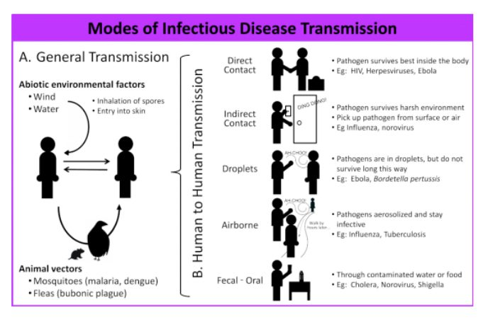
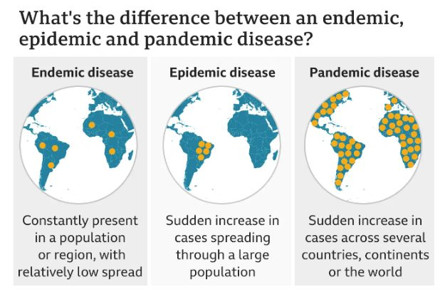
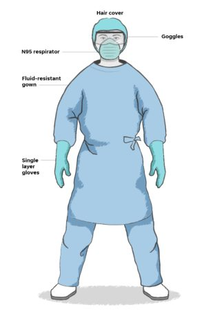
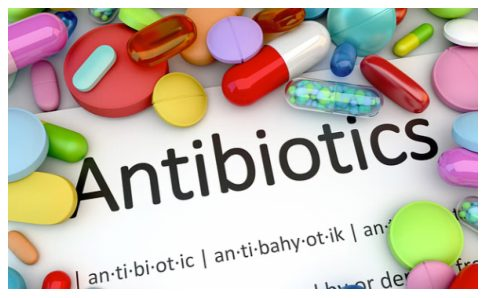
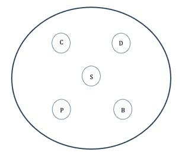
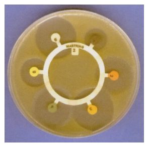
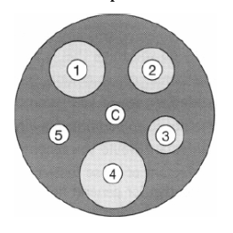

3.1 Transmission of pathogens
Understanding how pathogens spread is critical to preventing infectious disease. Many pathogens need a living host to survive; others can persist in a dormant state outside a host. All pathogens need a way to transfer from one host to another, or they die when their host dies. Hosts have evolved defences, but pathogens usually evolve faster because their generation times are much shorter, so hosts are usually at an evolutionary disadvantage.
To persist over long periods, pathogens need reservoirs where they normally live. Reservoirs can be living organisms or non-living sites such as soil and water, which may become contaminated with human faeces or with pathogens shed by intermediate hosts.
For an infection to spread, the pathogen must first be transmitted from the reservoir to an individual, who then transmits it to other susceptible individuals, directly or indirectly.

Modes of transmission
| Mode | Description |
|---|---|
| 1. Direct contact | Body contact with the tissues or fluids of an infected individual. Entry through mucous membranes (eyes, mouth), open wounds or grazed skin; also bites or scratches. |
| 2. Indirect contact | Transfer from inanimate objects or surfaces such as door handles and railings. The pathogen must be able to survive harsh conditions. |
| 3. Droplets | An infected person sneezes or coughs droplets (> 5 µm) containing the pathogen. It doesn't survive long in them, and is passed on by direct or indirect contact. |
| 4. Airborne | Aerosolised pathogens in smaller droplets (1–5 µm), usually transferred by inhalation. |
| 5. Oral | Ingestion of pathogens in contaminated food or water, or by licking or chewing contaminated objects. Contamination is usually from faeces, urine or saliva. |
| 6. Vectors | Living organisms that transfer pathogens to other animals or places, e.g. mosquitoes, fleas, ticks, rodents. |
Endemic, epidemic and pandemic
Infectious diseases are ever-present in society, usually below an expected threshold. Occasionally there is an outbreak, a new strain or a new disease with a significant local or global impact.

- COVID-19 spreading across every continent in 2020:
- Malaria, always present at predictable levels in parts of Africa:
- A sudden spike in measles cases in one city:
3.2 Control of Pathogens
Preventing transmission
It is important to stop an epidemic becoming a pandemic, which means acting early and being prepared. Policies that limit the spread of an infectious agent beyond the first cases and small clusters are called containment. Effective measures include:
- Controls: border controls limiting movement to and from affected areas.
- Identify cases: educate the public about symptoms and risk factors, provide easy testing, flag potential cases, track contact with infected people.
- Trace contacts: track an infected person's movements from the moment of infection to find everyone who may have been infected.
- Quarantine: separate a person suspected of infection from others for the incubation period of the disease.
- Isolate: separate a person identified as infected from others.
- Protect: use personal protective equipment (PPE) for health-care workers who can't avoid contact with infected people.

A traveller who sat next to someone with measles on a plane is told to stay home for two weeks, even though they feel fine. This is:
Quarantine separates someone suspected of infection; isolation separates someone known to be infected.
Chemical control of pathogens
Billions of micro-organisms are found in every environment, including on our skin. Most are harmless, but some are dangerous. Antiseptics and disinfectants help control harmful micro-organisms; they are similar but used for different things.
| Antiseptics | Disinfectants | |
|---|---|---|
| What they do | Stop or slow the growth of micro-organisms | Kill or slow the growth of micro-organisms (e.g. by breaking down cell walls) |
| Used on | Living tissue: the external surface of the body | Non-living surfaces: floors, benches, handrails, surgical equipment, swimming pools, water purifiers |
| Examples | Chlorhexidine gluconate, ethanol and povidone-iodine in hospital hand rubs and sanitisers | Products containing alcohol, chlorine or ammonia |
Chemical treatments for infectious disease
Once bacteria and viruses are inside the body, how do we treat them?

Antibiotics:
- Chemicals produced by certain fungi, or man-made.
- Prescribed by doctors to treat bacterial infections. They only affect prokaryotic cells, so they are not used to treat viral infections.
- Different antibiotics kill bacteria in different ways: some break down the bacterial cell wall; some interfere with protein making; some stop bacterial DNA replication or RNA production.
Antivirals: antiviral medications help the body fight harmful viruses. They can ease symptoms and shorten an infection, and lower the risk of getting or spreading viruses such as herpes and HIV. Depending on the drug, antivirals can:
- block receptors so viruses can't bind to and enter healthy cells
- boost the immune system
- lower the viral load (amount of active virus) in the body
The common cold is caused by a virus, and antibiotics only affect prokaryotic (bacterial) cells. Fleming abandoned penicillin, thinking it too hard to produce and too slow-acting.
Test your understanding (page 36)
- List three preventative measures that individuals and health authorities could use to avoid a bacterial or viral infection.
- Compare the antibacterial action of antibiotics, antiseptics and disinfectants.
- What is the difference between antiseptics and disinfectants?
- PPE such as gloves and masks; restricting movement to stop transmission; isolating infected people and quarantining their contacts.
- Antibiotics are taken internally and target bacterial cells: they break down cell walls, stop protein production or stop replication. Antiseptics are applied externally to living tissue and stop or slow bacterial growth. Disinfectants are applied to non-living surfaces and kill or slow bacterial growth.
- Antiseptics are used on living tissue; disinfectants are used on non-living surfaces.
Food exposed to air, human contact and insect vectors is a major health risk. List three rules you would enforce as a health inspector of restaurants and food outlets.
Examples: refrigerate food once opened, to slow microbial growth and keep vectors off; wash hands after handling high-risk products such as chicken; use separate cutting boards for meat, chicken and vegetables; disinfect surfaces after use.
Consider: sterilisation, antibiotics, antiseptics, disinfectants, food processing and preservation, control of vectors, personal hygiene.
- a. Which have a disadvantage? Describe it. b. What are the advantages of their use?
- Do the side effects outweigh the benefits? Explain.
- a. Sterilisation by heating can cook food and change its taste and texture. Antibiotic misuse can lead to antibiotic resistance. Disinfectants can only be used on non-living surfaces.
- All control or stop the growth of pathogens; e.g. controlling vectors slows transmission between organisms.
- No: the benefits (preventing transmission, fewer people sick, less money spent on treatment) far outweigh the side effects.
- Bacteria have colonised every environment on Earth. What does this suggest about their ability to colonise the human body?
- An international traveller arrives in Australia and soon shows symptoms of chickenpox (a virus). What measures should be put in place to prevent an outbreak?
- Bacteria are extremely adaptable, and the human body has everything they need: warmth, space and food.
- Isolate the traveller; trace their contacts since arrival and quarantine them; ensure PPE (masks, gloves) and sanitiser use; disinfect anything they touched.
What is the difference between an epidemic and a pandemic?
An epidemic is a sudden outbreak within one geographical region; a pandemic is an outbreak across several countries and continents (or worldwide).
About 7.6 million people are infected with Chagas disease, caused by the protozoan Trypanosoma cruzi. It is common throughout Mexico and South and Central America. Is it endemic, an epidemic or a pandemic?
It is consistently common in particular countries, without a sudden flare-up: the disease is normally present within a geographical area.
Practical Activity 3: antiseptics, disinfectants and antibiotics
Many compounds inhibit bacterial growth. Manufactured antiseptics and disinfectants contain chemicals such as ammonia, phenols and alcohols; antibiotics are naturally made by micro-organisms such as fungi. None of them is uniformly effective: their effectiveness differs from one to another and from organism to organism.
#### Part A: antiseptics vs disinfectants
Solutions: C – chlorhexidine, D – Dettol, P – Pine O Cleen, B – Betadine, S – sterile water (control).

Method:
- Wash your hands and put on disposable gloves.
- Label your agar plate around the edge of the base, marking the positions of the four solutions and the control.
- Spread E. coli culture over the agar with a sterile swab to make a bacterial lawn, without damaging the agar. Discard swabs into disinfectant.
- Flame the forceps tips and cool. Pick up a sterile filter-paper disc by the edge, dampen it with sterile water (not dripping) and place it over the "S" label. This is your control.
- Rinse the forceps in sterile water, then repeat with a disc for each antiseptic/disinfectant.
- Seal the plate with tape, wash your hands and incubate overnight at 35.5 °C.
Results: draw the plate and measure the diameter of the clear area around each disc (the zone of inhibition). Record your data in a table.
- What was the purpose of the control disc?
- Is E. coli equally sensitive to all the antiseptics/disinfectants?
- Which would you recommend to control E. coli?
- Which would be most effective for general household use? Why?
- A basis of comparison: it shows the effect of the disc alone on bacterial growth, so any difference is due to the antiseptic/disinfectant.
- No: the zones of inhibition have different diameters. The larger the zone, the more effective the chemical.
- Typically chlorhexidine (most effective at inhibiting E. coli); Betadine was also effective.
- Betadine or Dettol: chlorhexidine is a much stronger chemical more suited to hospital settings.
#### Part B: antibiotics
Multidisc key: AP – ampicillin, C – chloramphenicol, PG – penicillin, S – streptomycin, ST – sulphatriad, T – tetracycline.

Method: label the plate, swab it with E. coli to make a lawn, discard swabs in disinfectant, flame the forceps and press the multidisc gently onto the agar. Seal, incubate overnight at 35.5 °C, clean the desk and wash your hands.
- Why dispose of swabs and gloves in disinfectant and sterilise the forceps between handling each disc?
- Which antibiotic appears most effective against E. coli? Which is least effective?
- Which antibiotic would you recommend for an E. coli infection?
- Disinfectant stops contamination of surfaces and objects you touch; sterilising the forceps stops contamination between discs.
- Typical results: S (streptomycin) most effective; PG (penicillin) least effective (E. coli may have built up resistance, as penicillin was the first antibiotic discovered and used).
- Streptomycin, as it was very effective at inhibiting E. coli growth.
- What feature does this experiment lack? How would you correct it, and why?
- Why must plates be sterilised before disposal?
- There is no control. Add a sterile disc (or one dampened with sterile water). A control is needed as a point of comparison, to show it is the antibiotic that kills or inhibits the bacteria.
- To kill all micro-organisms that grew on the plates, so nobody handling them later is affected.

- The central disc C is most likely the .
- Based on the data, the most effective antibiotic is number , because it has the .
6c. The doctor chose antibiotic 1 instead. Suggest why.
- Many bacterial strains are now resistant to antibiotics. How does resistance develop, and how can more resistant strains be minimised?
6c. Antibiotic 1 still has a large effect on killing or inhibiting the bacteria, so it will still work, and it may be safer for the patient with fewer side effects (or cheaper, or the patient is allergic to another).
- A small proportion of bacteria carry a resistance gene. When antibiotics are used incorrectly, these bacteria survive and pass on their resistance genes. Over time the number of resistant bacteria increases until the antibiotic no longer works. To minimise this: only use antibiotics for bacterial (not viral) infections, and finish the full course.
Crossword 1: revision of terms
- An unexpected increase in the number of disease cases in a specific geographical area:
- Chemicals used to treat bacterial infections:
- Non-living, acellular pathogenic agent which inhabits host cells:
- A disease that is consistently present in a population:
- A substance that stops or slows the growth of microorganisms on living tissue:
- A rapid spread of an infectious disease over several continents:
- An organism or agent that causes disease:
- Carries a disease from one organism to another:
- Any condition that impairs the functioning of an organism:
- Eukaryotic organisms with cell walls of chitin that spread using hyphae:
- The ability of the pathogen to cause damage to the host:
- A gelatinous substance used to culture bacteria:
- Abnormal proteins that cause disease:
- A substance that kills or slows the growth of microorganisms on non-living surfaces:
- Single-celled prokaryote cells:
- Chemicals used to treat viral infections:
- A disease or pathogen that can be transmitted to other organisms:
- A basis of comparison in experiments: